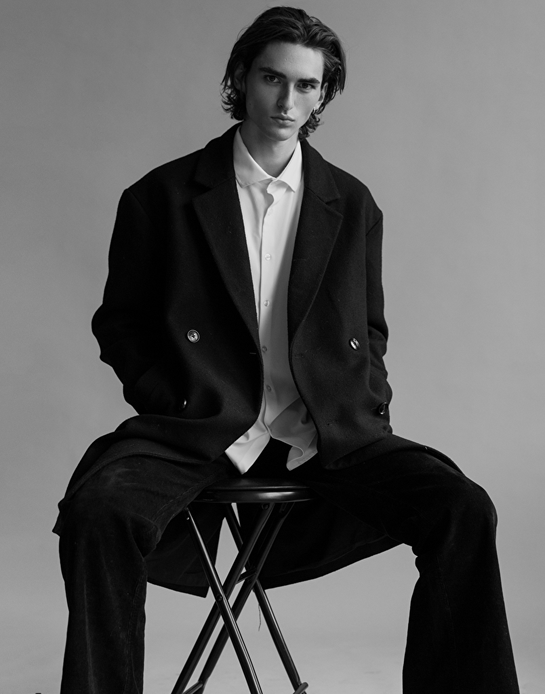

ELI HERLOCKER

Eli Herlocker, an esteemed model with an impressive portfolio, is the face of Herlocker, a celebrated Chicagoan label renowned for its innovative and stylish clothing. Represented by some of the most prestigious modeling agencies, including Select Model Management in Chicago, STATE Management in Los Angeles, Fever Management in Paris, and Tank Agency in Milan, Elijah's modeling career has flourished on both national and international stages.